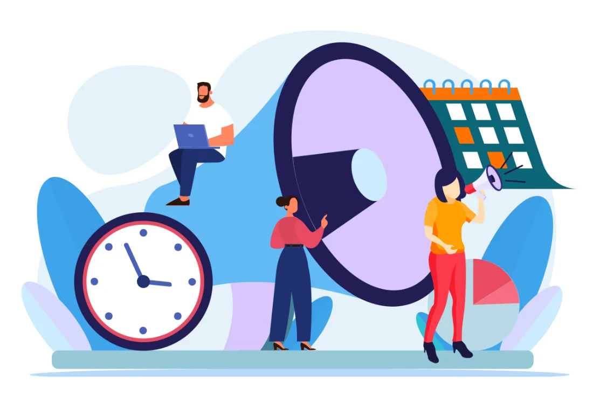

Sesión 5
Sesión 5Presentación de proyectos.
Cierre y retroalimentación.
- Sábado 05 de septiembre
- 09:00h a 13:00h
- Presencial
- Torrente, Edificio dos, 2º piso, salón 2206
- Zoom: por compartir
- Aporte de la sesión: 25%

Introducción
Diseñadoras y Diseñadores de AVA, constructores de nuevas vidas y realidades... ¿cómo están?
Hemos llegado a la sesión cinco, al punto más emocionante de nuestra experiencia de aprendizaje, donde llevaremos a cabo la presentación de proyectos, el cierre y la retroalimentación. Sin embargo, les invito a dejar de lado la idea tradicional, ya normalizada y naturalizada de que hoy «terminan» un trabajo académico, una materia o asignatura, porque en realidad: hoy inauguramos su praxis.
Recapitulemos: durante las semanas previas, hemos deconstruido la tecnología, debatido sobre modelos instruccionales y estructurado métricas de calidad, específicamente cuando diseñaron sus objetivos de aprendizaje y su dinámica de evaluación. Ahora, el código, las secuencias didácticas, las interfaces y los materiales que han construido atravesarán un paso final: el escrutinio de la otredad, es decir: la valoración de sus pares. El presentar sus AVA, es mucho más que mostrar una simple selección o configuración de software que utilizarán en su práctica docente; están defendiendo su manifiesto ético, su forma de construir nuevas realidades en las personas que consideran que crecerán con su compañía, con su tutoría, con su acompañamiento.
Cada decisión que tomaron —desde la tipografía seleccionada y la claridad de su instrumento de evaluación, hasta la calidez del mensaje de bienvenida y la flexibilidad de sus materiales— impactará directamente en la forma de aprender y las emociones de seres humanos. Aprender inglés es, por naturaleza, un acto de vulnerabilidad, y si sus entornos virtuales son hostiles, rígidos o solo fundamentados por el uso de la tecnología, se convertirán en cómplices de la exclusión y la deserción. Por el contrario, si han diseñado con empatía, habrán construido un espacio cognitivo donde la apropiación de la lengua será un hecho y sin barreras (Coll, Mauri y Onrubia, 2008).
La retroalimentación que recibiremos hoy, de nuestros pares, en nuestra sesión presencial tiene un carácter proyectivo, practicaremos el feedforward: dialogaremos sobre lo que logramos en estas cinco semanas y sobre cómo estas habilidades transformarán sus futuros espacios áulicos y digitales.
Asuman la responsabilidad de su diseño, defiendan sus arquitecturas pedagógicas desde su planeación, la ciencia y la sensibilidad humana que exige el nivel de maestría.
El entorno está listo, el aprendizaje es de ustedes; Herson Castellanos.
Activación de recursos previos
«Veo, pienso, me pregunto»
«Veo, pienso, me pregunto» es una idea original del Project Zero de la Universidad de Harvard adaptada para esta experiencia de aprendizaje, que consiste en que visualices los siguientes materiales y, posteriormente, realices las últimas adecuaciones que consideres necesarias en tu «Manifiesto del diseñador», donde se evidencie cómo desmantelas aquellas prácticas docentes tradicionales automatizadas.
Comparte por última ocasión tu nuevo «Manifiesto del diseñador» en el tema que lleva este nombre en el grupo de Telegram y en el foro 4: Autoevaluación; recuerda la importancia de respetar los Lineamientos para promover el diálogo académico establecidos en la Dinámica de trabajo de esta experiencia educativa.
Participación y evidencia
Evidencias de aprendizaje
En esta sesión te autoevaluarás y valorarás el trabajo de tus pares. Recuerda que las participaciones en esta sesión aportarán el 25% de tu calificación final.

Fuentes de información
Fuentes de información
Referencias de la sesión11
- AprendemosJuntos [BBVA]. (mayo 21, 2018). ¿Puede un grupo de niños con acceso a Internet aprender solos? Sugata Mitra, científico y profesor [Video]. YouTube. https://n9.cl/w83sk9
- Coll, C., Mauri, T., y Onrubia, J. (2008). El análisis de los procesos de enseñanza y aprendizaje mediados por las TIC: una perspectiva constructivista. En C. Coll y C. Monereo (Eds.), Psicología de la educación virtual: Aprender y enseñar con las tecnologías de la información y la comunicación (pp. 74-103). Ediciones Morata.
- C. Coll y C. Monereo (Eds.). (2008). Psicología de la educación virtual: Aprender y enseñar con las tecnologías de la información y la comunicación, 148 – 150. Ediciones Morata. https://n9.cl/mdugwb
- Durán Martínez, R., y Beltrán Llavador, F. (2013). Nuevos modelos de formación del profesorado de inglés: El caso de Castilla y León. Profesorado. Revista de Currículum y Formación de Profesorado, 17(3), 307-323. https://n9.cl/tdj26s
- DW Documental [DW]. (diciembre 16, 2021). El futuro de la educación - Aprendizaje virtual | DW Documental [Video]. YouTube. https://n9.cl/ufsd4
- DW Tecnología y mundo digital [DW]. (enero 17, 2026). Cómo usar (bien) la IA en la escuela: riesgos, reglas y oportunidades [Video]. YouTube. https://n9.cl/c7tdef
- Herson Castellanos. (septiembre 2, 2026). Ambientes Virtuales de Aprendizaje. Sesión 05 [Video]. YouTube. https://n9.cl/hnkq7
- Ion, G., Silva, P., y Cano García, E. (2013). El feedback y el feedforward en la evaluación de las competencias de estudiantes universitarios. Profesorado. Revista de Currículum y Formación de Profesorado, 17(2), 283-301. https://n9.cl/ozfz0
- TED Talks [TED]. (febrero 27, 2013). Sugata Mitra: Construyendo una escuela en la nube [Video]. YouTube. https://n9.cl/fdnvoe
- TEDx Talks [TEDx]. (octubre 12, 2013). Actitud | Victor Küppers | TEDxAndorralaVella [Video]. YouTube. https://n9.cl/p93l6h
- Universidad CEU Cardenal Herrera [CEU]. (octubre 31, 2023). Las claves del Diseño Universal del Aprendizaje (DUA) [Video]. YouTube. https://n9.cl/a7e5u
Videos sugeridos
Videos sugeridos
Muchas gracias...
por la compañía, por permitirme caminar contigo en este recorrido, por las charlas y discusiones, por la oportunidad de ser parte de tu formación, por tu compromiso y por haber formado parte de este encuentro. Recuerda, iniciamos un nuevo recorrido: siendo más creativos, más curiosos... continúa con entusiasmo, probando y generando nuevos y mejores Ambientes Virtuales de Aprendizaje.
— Herson Castellanos.